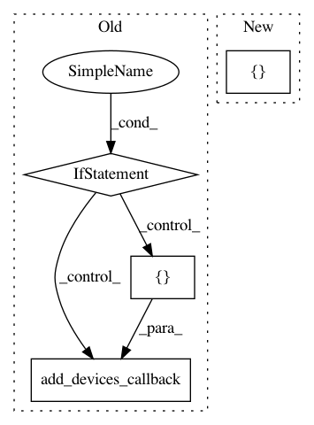

e5ef548f1072d72a6be6df53322b3f4b8692dbc8,homeassistant/components/switch/acer_projector.py,,setup_platform,#Any#Any#Any#Any#,36
Before Change
timeout = config.get("timeout", 1)
write_timeout = config.get("write_timeout", 1)
if not serial_port:
_LOGGER.error("Missing path of serial device")
return
devices = []
devices.append(AcerSwitch(serial_port, name, timeout, write_timeout))
add_devices_callback(devices)
class AcerSwitch(SwitchDevice):
Represents an Acer Projector as an switch.
After Change
timeout = config.get(CONF_TIMEOUT)
write_timeout = config.get(CONF_WRITE_TIMEOUT)
add_devices([AcerSwitch(serial_port, name, timeout, write_timeout)])
class AcerSwitch(SwitchDevice):
In pattern: SUPERPATTERN
Frequency: 3
Non-data size: 4
Instances
Project Name: home-assistant/home-assistant
Commit Name: e5ef548f1072d72a6be6df53322b3f4b8692dbc8
Time: 2016-09-02
Author: mail@fabian-affolter.ch
File Name: homeassistant/components/switch/acer_projector.py
Class Name:
Method Name: setup_platform
Project Name: home-assistant/home-assistant
Commit Name: 8dd7ebb08e77e035127a617c9bfbd6d5a6bb6380
Time: 2016-06-29
Author: mail@fabian-affolter.ch
File Name: homeassistant/components/sensor/deutsche_bahn.py
Class Name:
Method Name: setup_platform
Project Name: home-assistant/home-assistant
Commit Name: 31826ab263212fa6821b933899dad9c9f96aba44
Time: 2015-10-31
Author: a.kratzer@kratzer.it
File Name: homeassistant/components/light/mqtt.py
Class Name:
Method Name: setup_platform